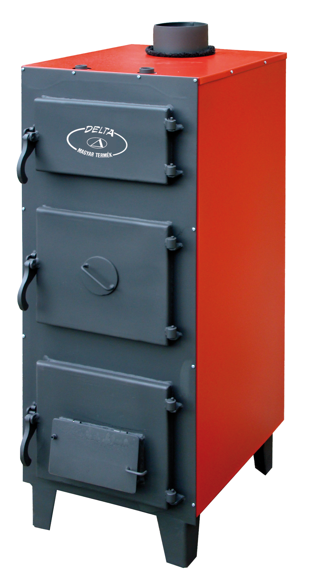
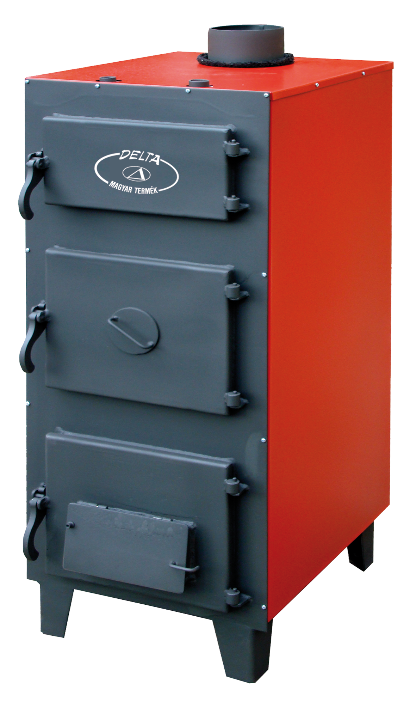
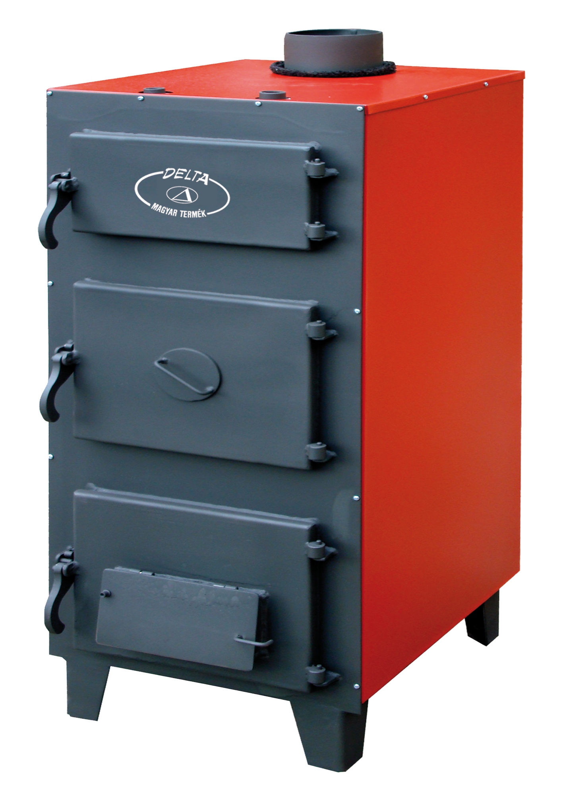
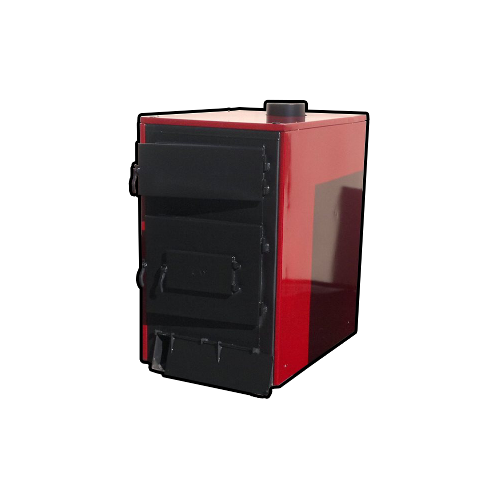
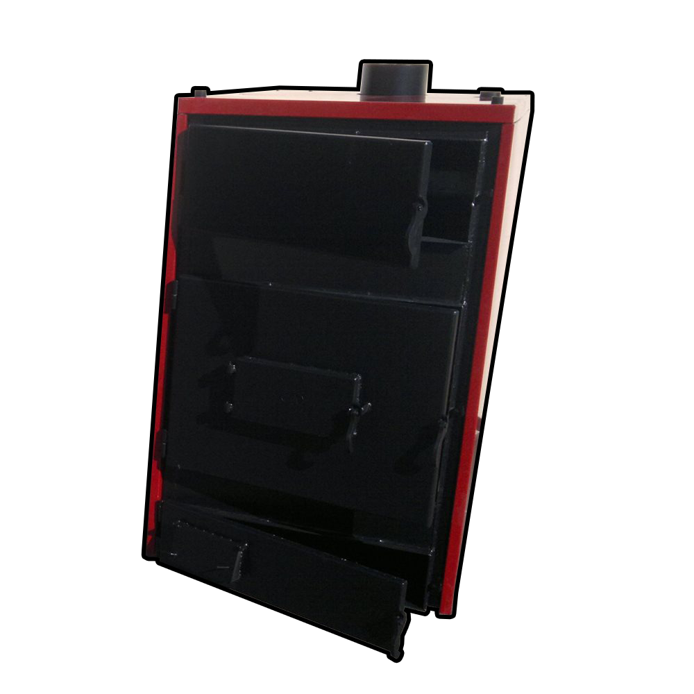

Üdvözöljük az Uniholz KFT. weboldalán! Az Uniholz KFT. a megbízhatóság és hosszú élettartam jegyében kínál olcsóbb megoldást az otthon melegéért. Szakértelmünkkel és több mint 25 éves tapasztalatunkkal a vegyes tüzelésű kazánok terén a legkiválóbb minőségű termékeket gyártjuk. A Delta vegyestüzelésű kazánokat kínáljuk, melyekkel a fűtés gondjait a legkisebb befektetéssel és a leggyorsabban oldhatjuk meg.
A Delta vegyestüzelésű kazánok előnyei közé tartoznak a nagyméretű ajtók, amelyek megkönnyítik a kezelhetőséget. Takarékos megoldást kínálunk, hiszen ezek a kazánok nem csak hatékonyan fűtenek, hanem a leeső hamut is hasznosítják a fűtés során. Emellett az esztétikus külső is jellemzi termékeinket, így kazánjaink nem csak hatékonyak, de esztétikusak is a lakásban. A különböző típusok közül választhatja a D-28, D-36 és D-48 modelleket, melyek mindegyike kiválóan alkalmazkodik a különböző fűtési igényekhez. A vegyes tüzelésű kazánjainkat szivattyús és gravitációs fűtésre is használhatja, így biztos lehet abban, hogy megtalálja a számára legmegfelelőbb megoldást.
D-28
D-36
D-48
D-78
D-96
| | Uniholz Kft. - Központi telep | Uniholz Kft. - Miskolci telep | Keletker Vaskereskedés | Nyír-Acél Kft. | Delta-Metál Kft. | Uniholz Kft. - Egri telep | Hungaroferro Vaskereskedés |
| Helyszín | 4080 Hajdúnánás, Gohér u. 17. | 3532 Miskolc, Vasgyári út 41. (A DAM mögött!) |
4030 Debrecen, Galamb u. 2/b. | 4405 Nyíregyháza, Tünde u. 10. | 5600 Békéscsaba, Csorvási u. 25. | 3300 Eger, Kistályai út 1/A. |
6728 Szeged, Budapesti út 8. |
| Mobil | +36-30 819 13 27 / +36-70 88 44 659 | +36 30 434 0442 | +36 30 452 00 47 | +36 30 223 55 37 | +36 30 267-86-70 | +36 20 398 7475 / +36 30 866 5923 | +36 30 746 7554 |
| info@uniholz.hu | miskolcvas@uniholz.hu | debrecen@uniholz.hu | info@nyir-acel.hu | deltametalkft@uniholz.hu | egervas@uniholz.hu | tornyai.mihaly@uniholz.hu | |
| Nyitva tartás | H-P: 07:30 - 16:00 | H-Cs: 07:30 - 16:00 P: 07:30 - 14:00 Szo: 07:30 - 11:30 |
H-P: 8:00 - 16:00 Szo: 8:00 - 12:00 |
H-P: 8:00 - 16:30 Szo: 8:00 - 12:00 |
H-CS: 7:30 - 16:00 P: 7:30 - 15:30 |
H-Cs: 7:30 - 16:00 P: 7:30 - 15:00 |
H-CS: 7:30 - 16:00 P: 7:30 - 15:30 |
A Delta Metál KFT. büszkén gyártja termékeinket Békéscsabán, a Csorvási út 25. szám alatt található telephelyünkön. Vásárlóink elégedettsége érdekében minden termékünkre 2 év garanciát vállalunk. Ha bármilyen kérdése van, vagy szeretne megrendelést leadni, kérjük, lépjen kapcsolatba velünk a következő elérhetőségeinken:
Mobil: 06-30-267-8670 E-mail: deltametalkft@gmail.com
Kollégáink készséggel állnak rendelkezésére a legjobb tanácsokkal és segítséggel. Várjuk Önt szeretettel az Uniholz KFT. csapatában, hogy segítsük otthona melege és kényelme érdekében!